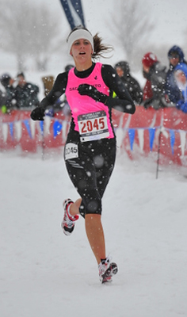

Buffalo Babes
2009 Buffalo Chips Running Club Girls' Team wins Young Women's National Junior Olympic XC title

Kelsey Smith of South Lake Tahoe led the Buffalo Babes, placing fourth in the 5,000-meter race in 19 minutes, 27.2 seconds. She was followed closely across the line by teammates Breanna Lewis (fifth in 19:28.3) and Hayley Scott (sixth in 19:30.4).
by Bob Burns
Link to Top PA Young Women and Young Men Photos and Finish Times
If their name doesn’t grab your attention, their uniforms will.
The Buffalo Babes were even easier to spot than usual at the USATF National Junior Olympic Cross Country Championships in Reno. With a snowstorm blanketing the course and visibility reduced by the whiteout, their bright pink jerseys stood out like a series of flashing beacons.
“It’s really easy to spot our runners in a crowd,” said team manager Joe Hartman.
The Buffalo Babes backed up their flashy name and color with a gritty showing Dec. 12 at the Junior Olympics, claiming seven of the top 15 spots in the Young Women’s (ages 17 and 18) race to win the national title with 26 points, comfortably in front of runner-up Team Idaho ‘s 51-point total.
Kelsey Smith of South Lake Tahoe led the pink charge in Reno, placing fourth in the 5,000-meter race in 19 minutes, 27.2 seconds. She was followed closely across the line by teammates Breanna Lewis (fifth in 19:28.3) and Hayley Scott (sixth in 19:30.4).
Michelle Mowry (10th in 19:43.8) and Katherine McFarren (13th in 20:05.9) rounded out the top five scorers. The Buffalo Babes’ depth was such that their “B” team placed fourth in the team standings.
“You could interchange them, they’re all so talented,” said Nekota Kay, the Vacaville High School cross country coach who serves as the Babes’ primary coach. “I’m in awe that they were able to run so well in a blizzard. The girls really wanted it.”
The Babes are the high school division of the Buffalo Chips, a Sacramento-based running club. Comprised of juniors and seniors from the Sac-Joaquin Section and Northern Nevada, the young women’s group joined forces following the 2009 prep cross country season to form an all-star lineup.
Smith is a three-time Nevada AAAA state champion in cross country for South Tahoe High School. Scott, an Oak Ridge senior, won the Sac-Joaquin Section Division I title. Lewis, a Sheldon senior, placed second at the section meet. Mowry finished fourth in the Nevada AAAA championships for Carson High School, and McFarren was second in the same race for Reno’s Bishop Manogue.
When high school competition concluded in mid-November, Kay organized informal workouts three times a week. Even though they spent much of the fall racing against each other, the runners gelled as a team as they prepared for the Junior Olympics. Smith traveled from the South Shore to Sacramento on weekends to train with her fellow Babes in more hospitable weather.
“We make sure that high school remains the focus,” said Hartman, whose duties include recruiting. “We have the high school coaches to thank for our success. Our whole goal is to give them different running experiences.”
The Junior Olympic race certainly qualified as a different experience.
“It was tough because the snow was coming down so hard, the visibility was horrible,” Smith said. “It just happened that we all ran awesome and managed to win it.”
At least Smith is accustomed to snow, living at Lake Tahoe. For the Sacramento-area runners, it was a novel experience.
“I had never even trained in snow before,” Scott said. “It was challenging, but it was fun.”
The Buffalo Babes were formed in 2000, and one of the club’s first runners was Caitlin Chalk, the former Granite Bay standout. At first, Thornton wasn’t sure what sort of reaction their name would receive.
“The girls love it,” he said. “They wouldn’t have it any other way.”
When he was assembling this year’s team, Hartman considered Reno’s altitude.
“It’s tough to go from sea level to 4,700 feet,” Hartman said. “That’s why I tried to get some Nevada girls on the team.”
Hartman, a Postal Service worker who lives in Rancho Cordova, cooked up the idea of outfitting the team in pink jerseys and headbands about a year ago. Again, his intuition was rewarded.
“I love ‘em,” Lewis said. “It’s our color and it’s bright.”
“It’s our tradition,” Scott said. “It’s fun to run in pink.”
The Buffalo Babes had a strong showing across the board in Reno, finishing second in the Girls Intermediate (15-16) race and eighth in Youth Girls (13-14 years old).
“John Mansoor and Bob Shor of the Pacific Association did an incredible job organizing the event,” Hartman said. “I know they must have been thinking, ‘I didn’t sign up for this,’ but they did a great job considering. It made for an unforgettable event.”
Surely Smith, the Tahoe recruit, felt right at home in snowy conditions, right?
Not really.
“I skied when I was younger, but not much anymore,” she said. “It’s too cold.”